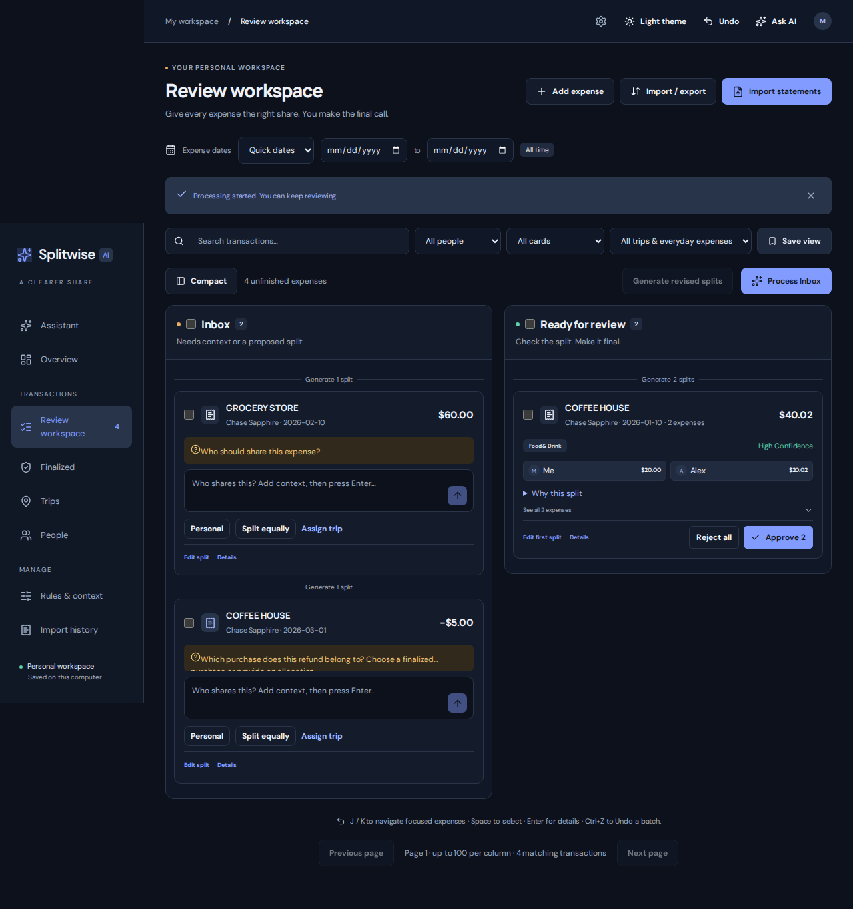

LATEST BUILD WEB + ANDROID
Splitwise AI.
A small model.
A practical everyday assistant.
A conversational expense workspace that turns requests into reviewable actions. Built around on-device inference, task-specific fine-tuning, and an agentic workflow with a deterministic ledger.
Explore the project ↗ SPLITWISE AI LOCAL INTELLIGENCE

Real app interface · synthetic demo expenses
01
Runs close to your dataOn-device Gemma inference on Android.
02
Trained for the taskQLoRA on complete tool-use trajectories.
03
You stay in controlReview and confirm ledger changes.